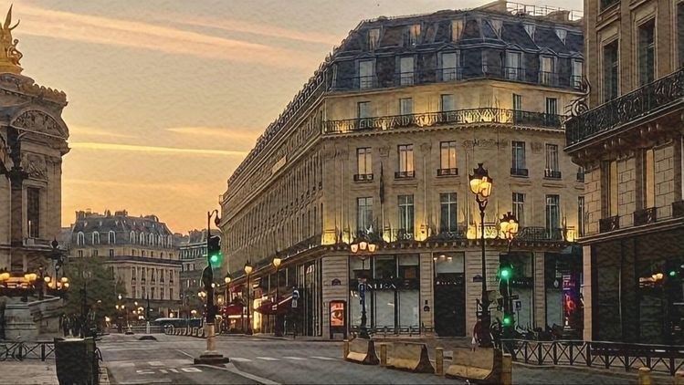
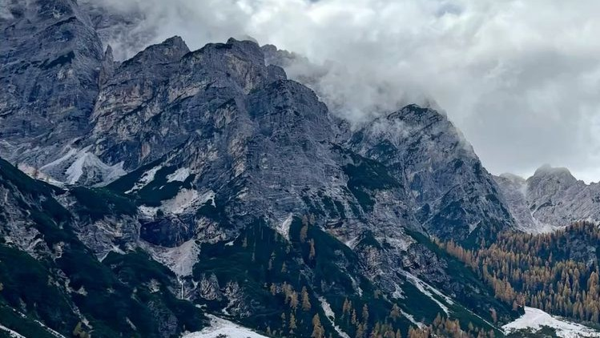
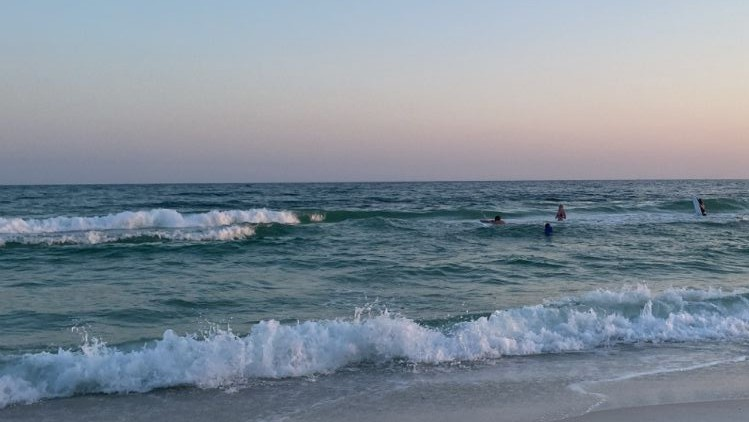

Hai deciso di ampliare il tuo bagaglio culturale visitando una nuova città o una città già vista? Bene esplora per vedere quale fa al caso tuo. Ricorda: ogni città ha il suo valore.
Scegli la tua prossima vacanza in pochi clic. Che tu preferisca il mare, la montagna o una città da scoprire, qui trovi idee e ispirazione per decidere in modo semplice e veloce. Inizia subito a immaginare il tuo prossimo viaggio.

Hai deciso di ampliare il tuo bagaglio culturale visitando una nuova città o una città già vista? Bene esplora per vedere quale fa al caso tuo. Ricorda: ogni città ha il suo valore.

Hai deciso di stare al fresco e goderti la natura con passeggiate o solo relax? Una destinazione di montagna è prorpio ciò che ti serve.

Il mare, le onde, le passeggiate all'alba o al tramonto, il puro relax... cosa può esserci di più bello? Non ti rimane che scegliere la destinazione più giusta per te.